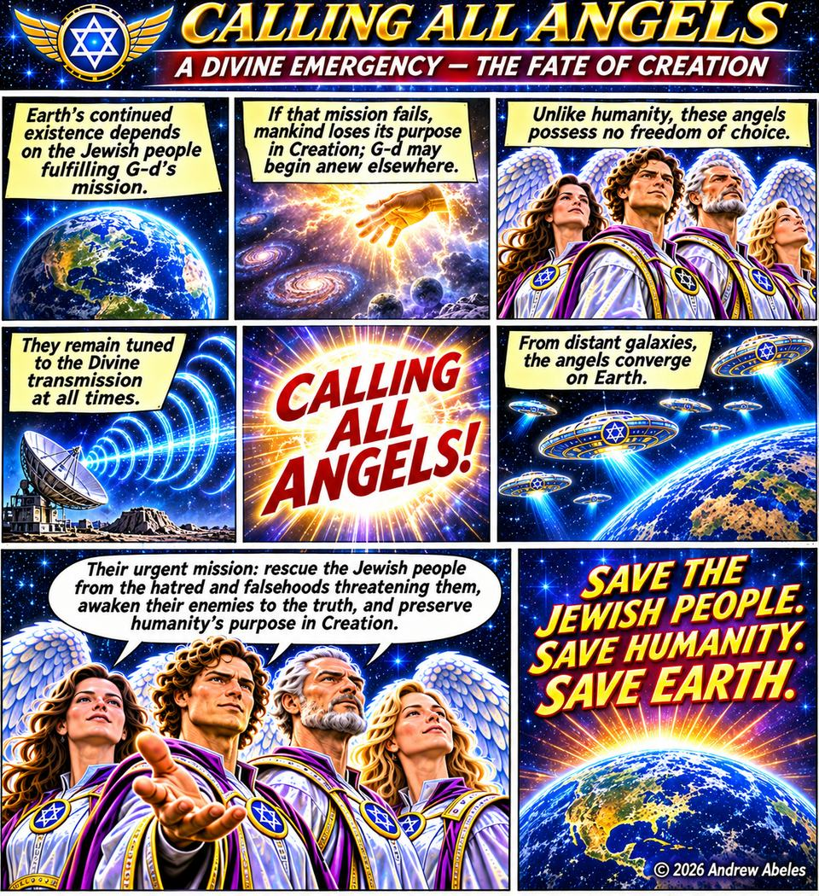
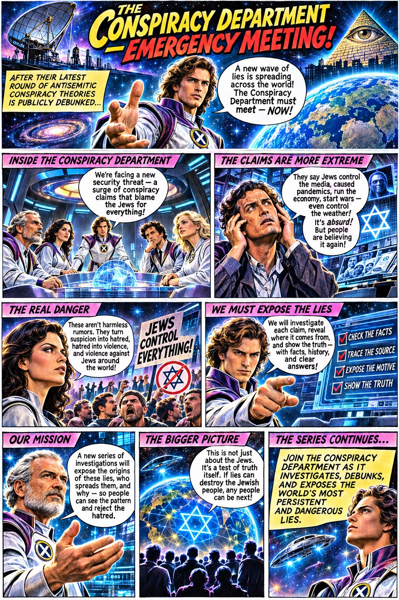
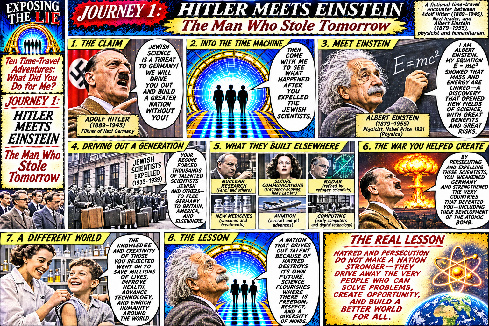
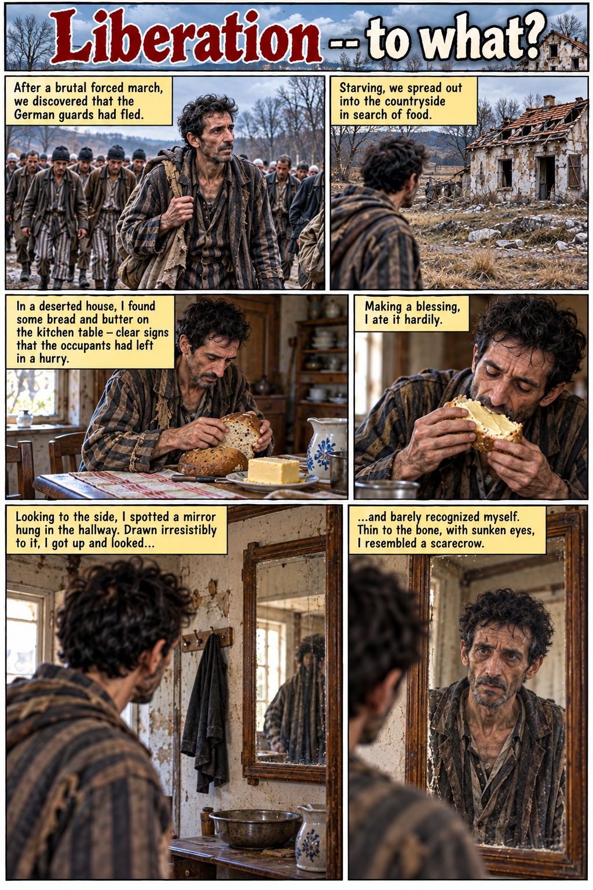

Calling All AngelsStart with the prologue and follow Episodes 1–41 in order. Fictional storytelling engages with historical claims; dramatized dialogue is not documentary evidence.
Read the complete series →The illustrated collection
A complete illustrated series confronting antisemitic claims through imaginative storytelling. Begin with the prologue, then explore other works.

Calling All AngelsStart with the prologue and follow Episodes 1–41 in order. Fictional storytelling engages with historical claims; dramatized dialogue is not documentary evidence.
Read the complete series →
Illustrated investigations of antisemitic conspiracy claims. Read the available episodes in sequence.
Read the series →
A mystical protagonist confronts prejudice through extraordinary encounters.
Read the story →
A time-traveler collection testing hateful claims against history.
Read the story →
A life remembered through illustrated testimony.
Read the story →
A Holocaust story about survival and what follows liberation.
Read the story →
A survival story of compassion, liberation and recovery.
Read the story →Swipe or scroll sideways to explore every project.
The purpose
The Lone Warrior uses visual storytelling, satire and Holocaust remembrance to challenge antisemitic myths. Fictional encounters and imagined dialogue should not be confused with primary historical records. Historical claims deserve careful sourcing and correction.
Video adaptations can bring the comics to new audiences. Production, editing, sound and distribution require resources and collaborators. Explore the stories first, then share the project with someone who may be interested in helping.
Share the Lone Warrior by email